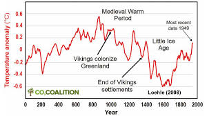

This age lasted only 4000 years (between 900 - 1300 B.c). The Medieval Warm Period was caused because the solar radiations and the change of oceanic circulation. Main groups of that time were Vikings, Vineyards and Turkeys, that were the principal ones. They used metal tools to fight Climate Change, such as big swords and axes with a hilt made out of wood. Some of them wore long tunics made of wool from lambs, because that protect them from cold. They were principally in four sites:
The temperature of the Medieval Warm Period was between 0,1ºC and 0,2ºC.
